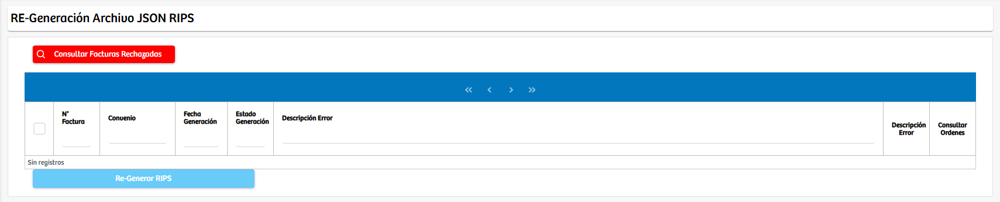
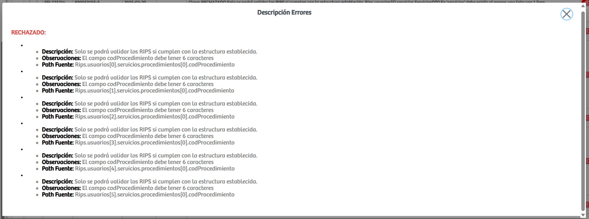
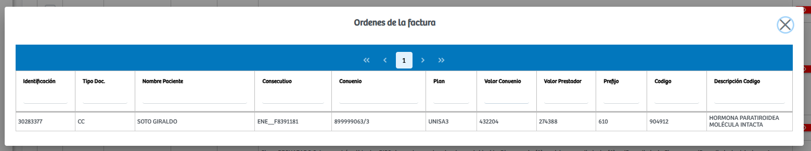

Modulos Sas-Web
Funcionalidades
Regenerar RIPS
El módulo Regenerar RIPSpermite gestionar de manera centralizada todas las facturas cuyo proceso de generación de archivos RIPS en formato JSON ha sido rechazado por inconsistencias, errores estructurales o fallas en la validación exigida por las normas vigentes. Al acceder al módulo, el sistema presenta una vista inicial en la que se habilita un botón para consultar facturas rechazadas. Una vez accionado, la plataforma ejecuta la búsqueda e identifica todas las facturas que no superaron el proceso de validación, desplegándolas en una tabla de resultados.
Cada registro de la tabla corresponde a una factura específica e incluye información relevante para su análisis, como el número de factura, el convenio asociado, la fecha de generación, el estado de generación y la descripción del error, donde se detallan las causas técnicas que impidieron la correcta creación del archivo RIPS. Con esta información, el usuario puede identificar fácilmente si los errores corresponden a fallas en estructura, datos faltantes, formatos incorrectos, periodos inconsistentes u otras condiciones que deben ser ajustadas antes de proceder a una nueva generación.

Adicionalmente, cada fila cuenta con dos acciones clave. El botón "Descripción Error" abre un modal en el que se amplía el detalle del error reportado, lo que facilita su interpretación y permite orientar las correcciones pertinentes. El botón "Consultar Ordenes" habilita un segundo modal donde se listan todas las órdenes asociadas a la factura seleccionada. En este modal se presenta información clínica y administrativa del paciente, como identificación, nombre, código de procedimiento, valores cobrados y demás datos vinculados a la prestación de servicios registrada en la factura, lo que permite validar si las inconsistencias se originan en alguno de esos registros.
 Cuando el usuario haya identificado y corregido los errores asociados a las facturas, podrá utilizar el botón "Re-Generar RIPS", el cual toma todas las facturas seleccionadas y ejecuta nuevamente la creación del archivo JSON conforme a los estándares exigidos. Este proceso habilita la posibilidad de que facturas previamente rechazadas sean aceptadas tras la corrección de sus datos.
En conjunto, este módulo constituye una herramienta esencial de auditoría y control operativo, ya que facilita la revisión detallada de las facturas rechazadas, permite acceder a la información subyacente para la identificación precisa de errores y habilita un mecanismo eficiente para reintentar la generación del archivo RIPS sin necesidad de repetir procesos manuales ni reconstruir la factura desde su origen.